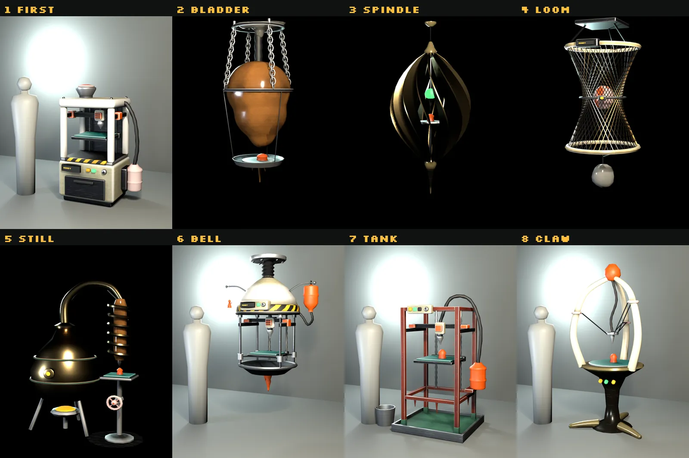
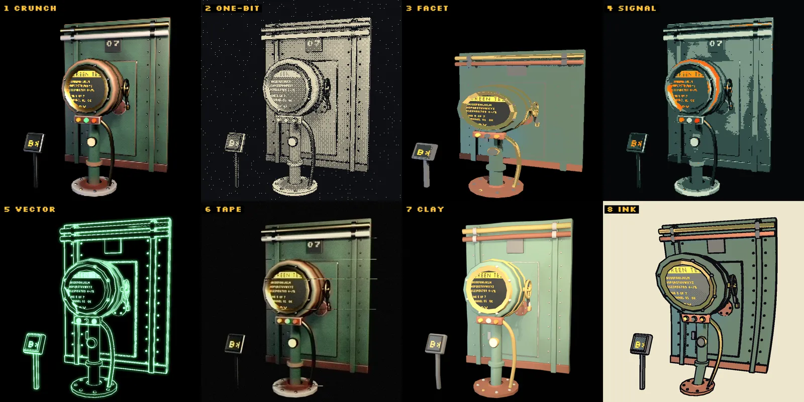
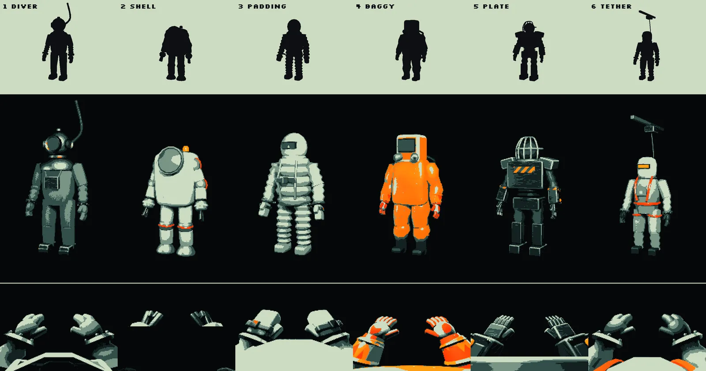
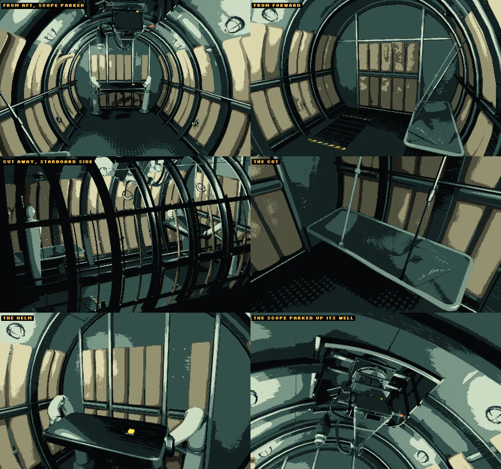

s&box · WIP
Survey Sentence
A prisoner, sealed alone in a windowless pod, finds and "prints" subjects using a sonar scope and a 3D printer. It's a PS1-style remake of my game jam entry Deep Survey, which you can play now.
- The sonar scope turns an outside camera into echolocation through a depth post-process, displayed on a curved CRT.
- Orders type onto the glass like a teleprinter, in baked bitmap fonts.
- A true first-person body, with animation takes checked for how fast they swing the camera.
- A layered sound director with ducking and loudness (LUFS) targets.


